An unguided FLUX sample (left) and the same trajectory guided by FMRG (right) toward a human-preference aesthetic reward. Drag the slider to morph between them, or change the step budget above.
TL;DR
Guidance is usually framed as sampling a reward-tilted distribution $\tilde\rho(x)\propto e^{r(x)}\rho(x)$, which requires stochastic, multi-particle dynamics that are expensive even for simple rewards. We instead pose guidance as a deterministic optimal control problem, yielding a hierarchy of algorithms in which the flow map emerges naturally and popular denoiser-based methods like DPS are recovered as the coarsest approximation. The result is Flow Map Reward Guidance (FMRG): highly efficient, training-free alignment that uses the flow map to both integrate and guide the flow along a single trajectory — matching or beating baselines with as few as 3 NFEs, up to a 70× speedup.
01 — Motivation
Samplers got fast. Guidance didn't.
In generative modeling, we rarely want just any sample — we want to tailor it to a user-specified reward $r$ that captures what we actually care about.
That reward might score, for example, aesthetic quality, agreement with a measurement, physical plausibility, or alignment with human intent. Guidance steers a pre-trained model toward high reward at inference time, with no extra training.
How do we formalize this? The dominant theoretical framework casts guidance as sampling from a reward-tilted distribution:
The standard framing — reward tilting
$\tilde\rho(x) \;\propto\; e^{r(x)}\,\rho(x)$
easy to write down — but a hard problem to solve
However, this target proves remarkably difficult to sample from efficiently. Practical methods often rely on many integration steps, stochastic dynamics, and costly test-time search. The framework also sits poorly with modern flow-based generative models, which increasingly favor deterministic samplers requiring few function evaluations, enabled by recent work on flow maps.
Problem 01
Hard to solve
Sampling $\tilde\rho$ is computationally expensive even for simple rewards. Multi-particle schemes like SMC need a high number of particles and integration steps; single-particle shortcuts like DPS rely on heuristic approximations, leaving their output poorly characterized.
Problem 02
A poor fit for modern samplers
Reward tilting is rooted in stochastic processes. But modern flow models — FLUX, Stable Diffusion 3 — are fundamentally deterministic, and flow maps push them to just a few steps. Porting tilt-based alignment here requires simulating stochasticity inside an ODE sampler — fundamentally misaligned with how these samplers run.
What we want is guidance native to modern flows: few-step, deterministic, single-trajectory.
The central question
Is there a principled framework for guiding flow-based generative models with very few function evaluations?
02 — Contributions
From a new perspective to few-step alignment
01
Guidance as optimal control
We reframe guidance from reward-tilt sampling to a deterministic optimal control problem — and the flow map emerges in its closed-form solution.
02
A unifying theory
We characterize FMRG analytically and elucidate the role of design choices like early stopping and the Jacobian — yielding a framework that subsumes DPS and prior single-trajectory methods as special cases.
03
Few-step alignment
On FLUX-scale text-to-image models, FMRG matches or surpasses baselines across inverse problems and reward-guided generation with as few as 3 NFEs — at least an order-of-magnitude speedup, up to 70×.
03 — Key idea
So do we need the reward tilt?
Not necessarily. Rather than sample the reward tilt, we pose guidance directly as deterministic optimal control: steer a single trajectory to maximize reward while staying close to the base flow.
Standard framing
$\tilde\rho(x)\propto e^{r(x)}\rho(x)$
sample the reward tilt — stochastic, many particles
The optimal control is characterized in closed form, with the flow map $X_{t,1}^{u^*}$ appearing explicitly. But this is the controlled flow map under the optimally-guided dynamics — exactly what we are trying to construct.
The closed form is circular, and not directly usable at inference.
04 — A tractable approximation
Replacing the controlled flow map
To break this circularity, we study the optimal control in the small-$\lambda$ limit — analytically tractable, and practically meaningful since aggressive guidance tends to promote reward hacking and mode collapse.
In this limit, the HJB equation reduces to a transport equation that we solve exactly. The result depends only on the uncontrolled flow map $X_{t,1}$:
This same expression admits a second, complementary interpretation. For any $\lambda$, it is the optimal greedy correction: the best single-step intervention at the current time, assuming the uncontrolled flow runs at every other step. Two complementary arguments — small-$\lambda$ and greedy — converge on the same signal.
A hierarchy of approximations
This slots into a hierarchy that also subsumes prior work.
DPS and many of its related derivatives (e.g., MPGD, FlowDPS, FlowChef) are best understood as coarse approximations of optimal control — not of the reward tilt.
We've replaced the controlled flow map with the pretrained one — but is this approximation well-behaved? In an analytically tractable Gaussian setting, we can answer exactly.
05 — Characterizing the output
What happens to the output distribution?
In an analytically tractable Gaussian setting, we can solve for FMRG's terminal distribution exactly — and quantify how its greedy guidance trades off reward against diversity.
Terminal distribution — sweep of $t_{\text{stop}}$
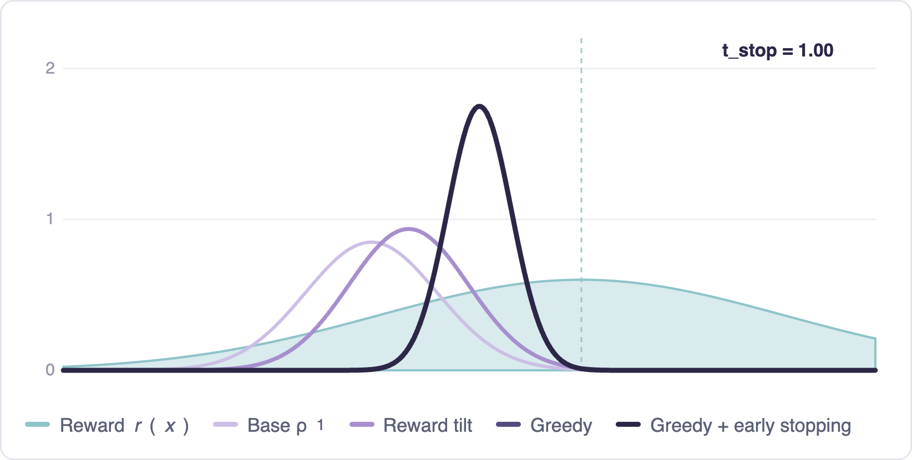
Without early stopping, greedy guidance can over-optimize: the terminal distribution collapses onto the reward maximum, losing diversity. Early stopping — guiding only on an initial window, then letting the uncontrolled flow finish — gives a principled way to tune the tradeoff. The distribution stays diverse while shifting toward high reward.
The analysis extends qualitatively to real rewards, where early stopping consistently improves reward-guided generation.
06 — Method
Flow Map Reward Guidance
For efficient inference, we apply operator splitting: at each step, we integrate the base flow exactly via the flow map, then apply a gradient correction toward reward.
FMRG — one trajectory, vs. multi-particle reward tilt
FMRG alternates exact flow-map steps with reward-gradient steps along a single trajectory (top), in contrast to reward-tilt sampling (e.g. SMC), which needs many particles, resampling, and many steps (bottom).
Notably simple — each step is one flow-map call plus one gradient correction.
In practice, several design choices shape FMRG, such as the guidance strength $\lambda$ and the number of gradient steps per interval. We turn next to the choice of gradient, which has a particularly significant role.
The role of the flow map Jacobian
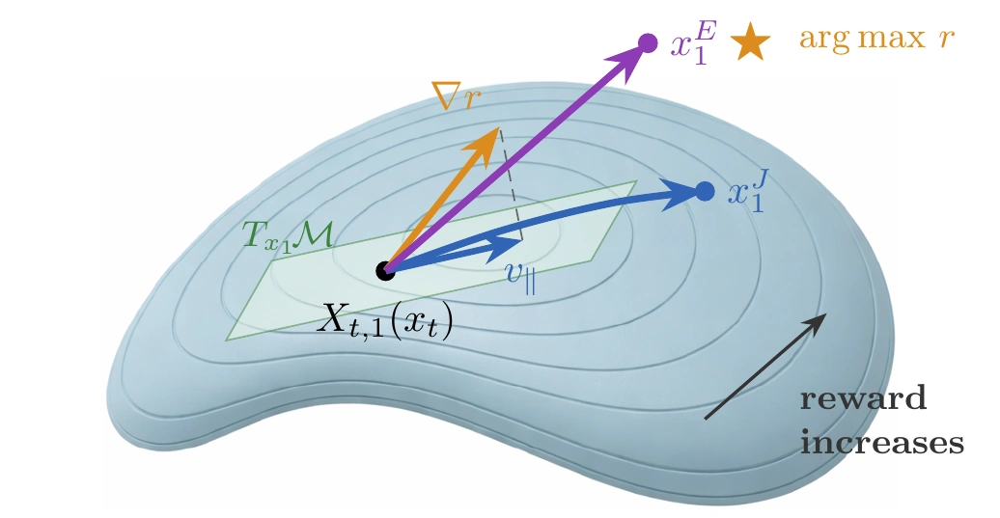
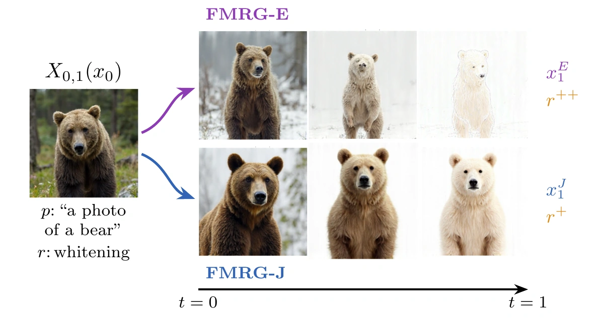
Left: the Jacobian projects $\nabla r$ onto the manifold tangent space, keeping FMRG-J on-manifold; FMRG-E follows $\nabla r$ off-manifold. Right: FMRG-J preserves data features; FMRG-E achieves higher reward but introduces off-manifold artifacts.
Geometrically, the flow map Jacobian $\nabla X_{t,1}(x)^\top$ acts as a projection. We prove that it maps the reward gradient onto the data-manifold tangent space, so each guided step stays on-manifold by construction.
For complex reward landscapes, where neural-network gradients often point far off the data manifold, this projection annihilates the off-manifold component and keeps FMRG-J on-manifold.
FMRG-E drops the Jacobian. It avoids backpropagation through the flow map, saving memory and optimizing the reward directly, but the trajectory can drift off-manifold. Prior single-trajectory methods (FlowDPS, FlowChef, MPGD) similarly drop the Jacobian, which effectively amounts to a rescaling of the guidance weight.
07 — Results
Matches or surpasses baselines with as few as 3 NFEs
A single FLUX flow map, evaluated across four reward families — from simple $\ell_2$ reconstruction to a 7B vision-language model.
Inverse problems
FMRG outperforms DPS, FlowChef, and FlowDPS on super-resolution, deblurring, and inpainting — across both AFHQ and FFHQ. FMRG-E matches baselines that use 2–10× more NFEs.
Reward-guided generation
FMRG dominates the GenEval–NFE Pareto frontier across budgets, reaching reward-tilt baseline quality with up to 70× fewer NFEs.
Style transfer
FMRG transfers the reference style while preserving content; denoiser-based approaches like DPS miss the style or show artifacts — exactly as the approximation hierarchy predicts.
VLM rewards
With a 7B vision-language reward, FMRG follows complex compositional prompts — object attributes, spatial relations, text — that unguided FLUX consistently misses.
Qualitative results — browse by reward family
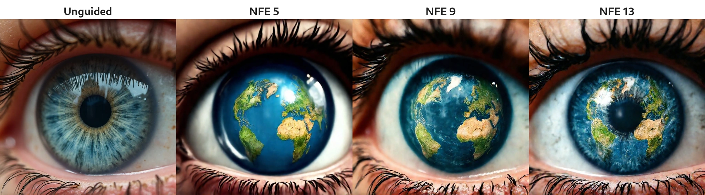
“Close up of an eye with the Earth inside the pupil.”
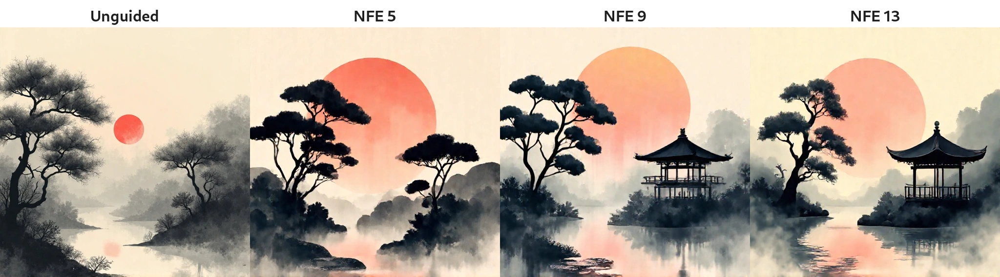
“A Japanese garden at dawn, ink illustration, minimal lines, sumi-e style, misty atmosphere.”
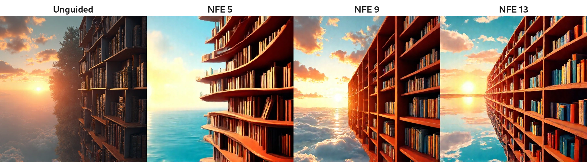
“Infinite library stretching beyond horizon.”
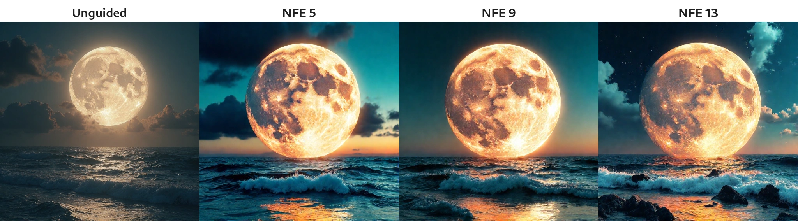
“Giant moon resting on the ocean, glowing softly, dreamlike.”
“A jazz musician playing saxophone, smoky bar, low key lighting, warm amber tones, candid moment.”
Reference → FLUX → DPS → FlowChef → FMRG-E → FMRG-J. FMRG captures the target style most faithfully.
Style hierarchy — second reference.
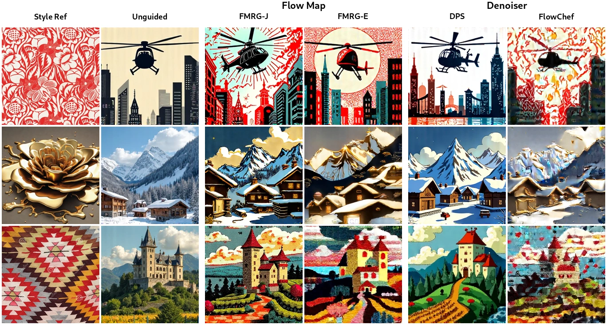
Style hierarchy — third reference.
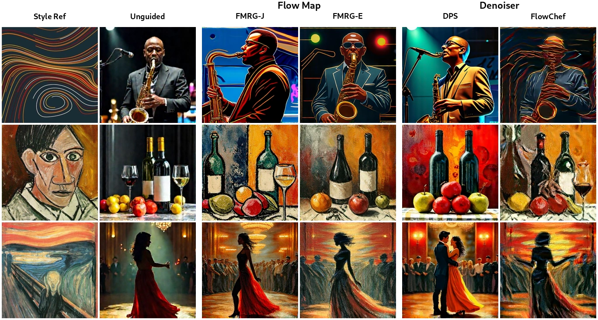
Style hierarchy — fourth reference.
Measurement
FMRG · 3 NFEs
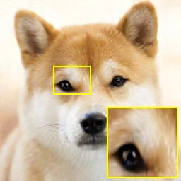
FMRG · 12 NFEs
4× super-resolution (AFHQ) — FMRG recovers sharp detail from just 3 NFEs.
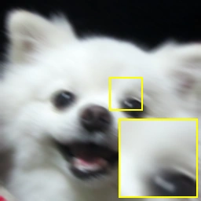
Measurement
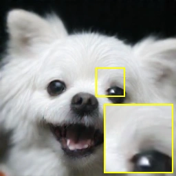
FMRG · 3 NFEs
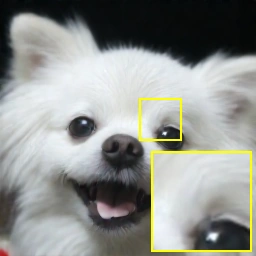
FMRG · 12 NFEs
Motion deblurring (AFHQ) — FMRG removes the blur from just 3 NFEs.
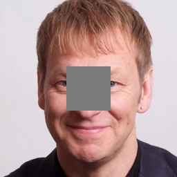
Measurement
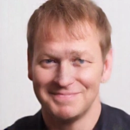
FMRG · 3 NFEs
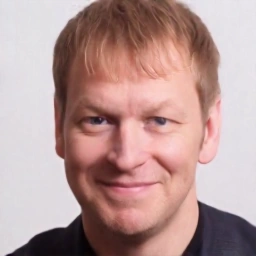
FMRG · 12 NFEs
Box inpainting (FFHQ) — FMRG fills the masked region from just 3 NFEs.
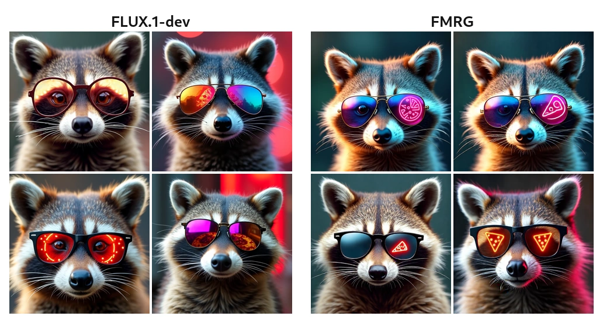
“A cool raccoon in mirrored sunglasses, with a neon pizza sign reflected in the lenses.”
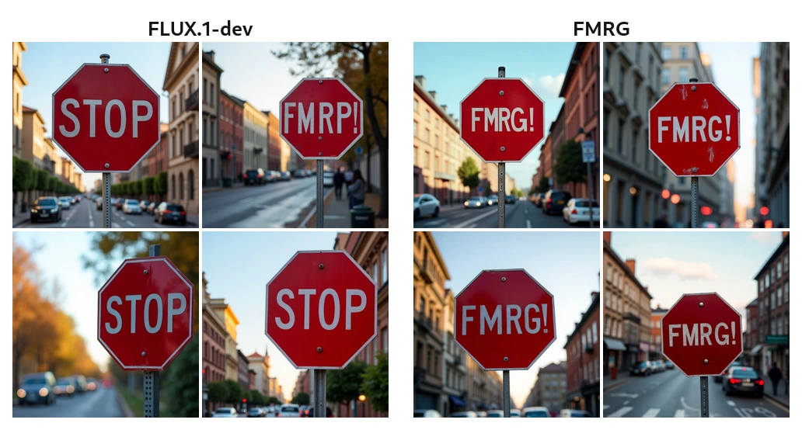
“A stop sign that says FMRG!”
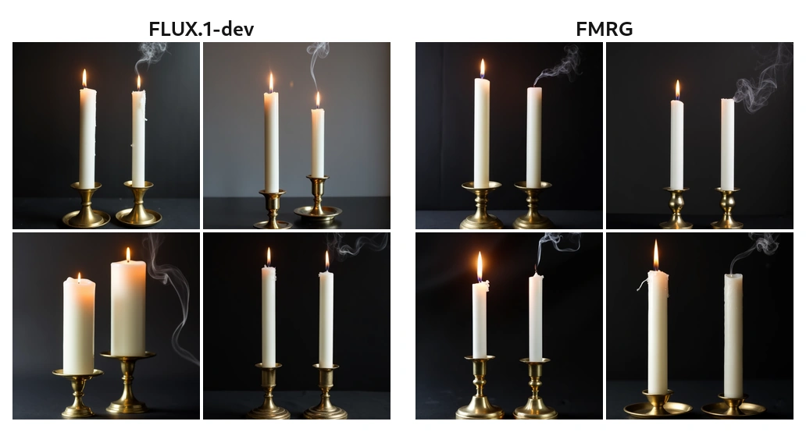
“Two tall white candles in matching brass candlestick holders, the left has a bright flame, the right is extinguished.”
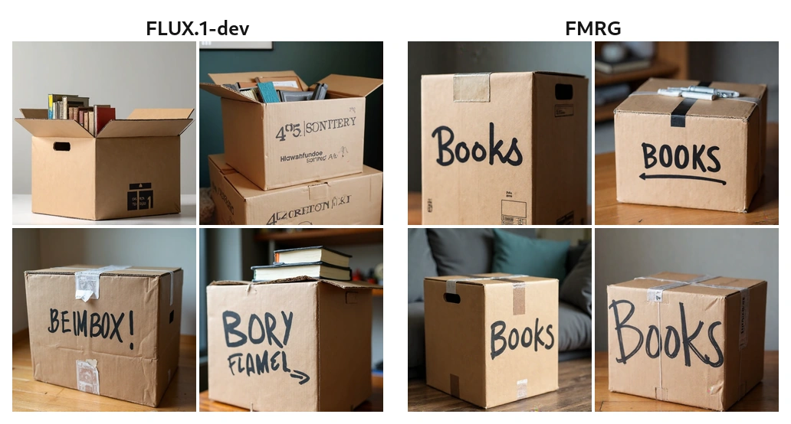
“A cardboard moving box labeled books in thick black marker.”
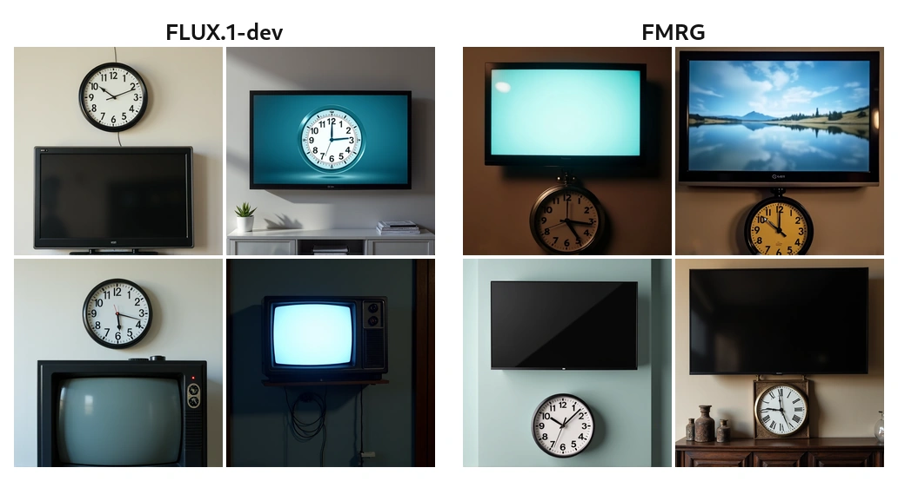
“A photo of an analog clock below a TV.”
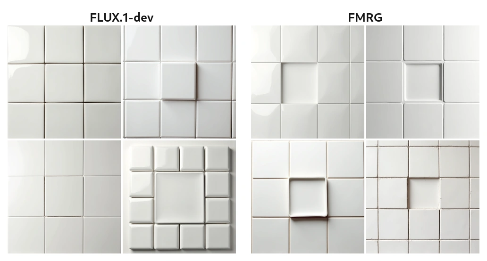
“A 3×3 grid of square ceramic tiles on a clean wall, exactly one tile missing in the center.”
Quantitative results — tables & plots
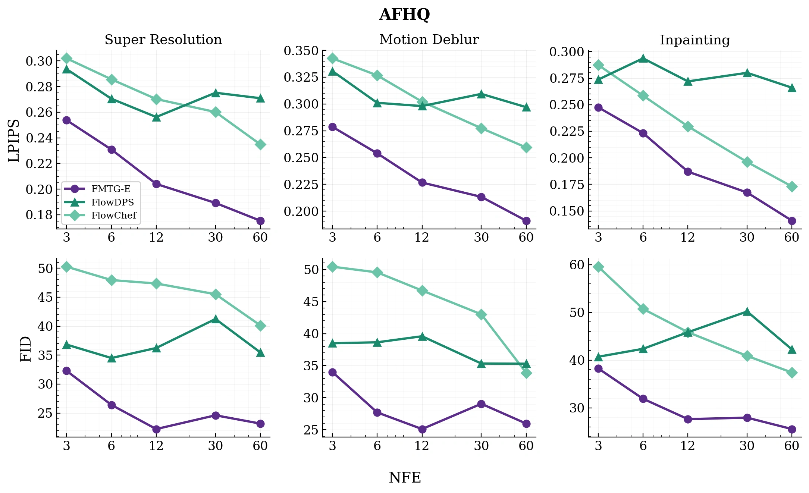
NFE–performance trade-off (AFHQ)FMRG-E achieves notably better performance in the low NFE regime (up to 10× reduction in NFE).
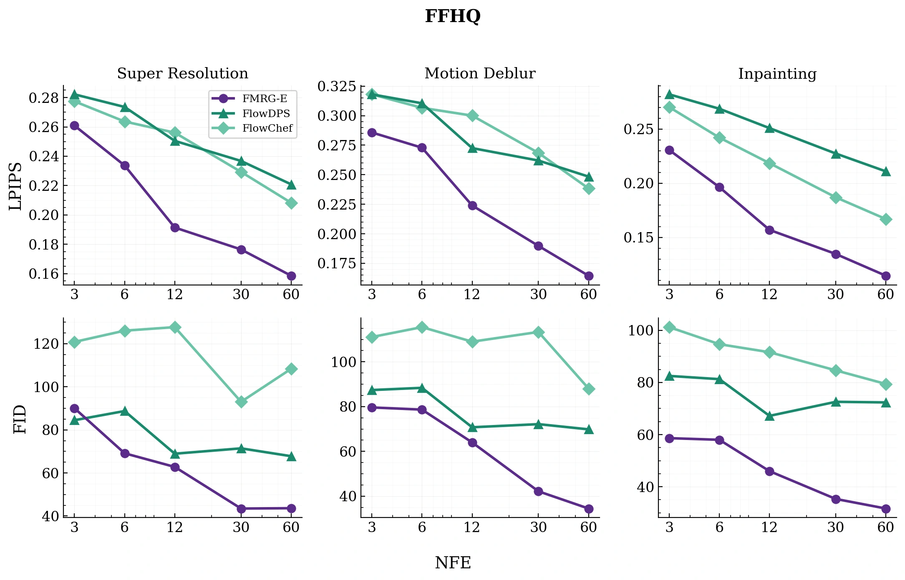
NFE–performance trade-off (FFHQ)FMRG-E achieves notably better performance in the low NFE regime (up to 10× reduction in NFE).
Method
Super-Resolution
Motion Deblur
Inpainting
PSNR↑
SSIM↑
LPIPS↓
FID↓
PSNR↑
SSIM↑
LPIPS↓
FID↓
PSNR↑
SSIM↑
LPIPS↓
FID↓
AFHQ
DPS
18.06
.443
.503
59.99
16.68
.407
.547
58.59
17.15
.512
.540
95.30
FlowChef
26.87
.767
.243
43.29
26.75
.749
.250
38.58
24.12
.828
.160
35.10
FlowDPS
27.02
.778
.250
34.58
26.07
.739
.279
36.77
26.11
.798
.239
44.10
FMRG-E
27.12
.772
.180
25.48
27.26
.771
.177
23.12
26.12
.851
.126
24.73
FMRG-J
27.39
.795
.193
29.51
27.36
.788
.204
24.43
26.71
.842
.158
31.20
FFHQ
DPS
18.74
.570
.530
119.30
20.20
.618
.483
127.91
18.93
.623
.486
137.36
FlowChef
26.71
.782
.237
117.04
24.53
.713
.296
109.30
25.41
.830
.164
76.52
FlowDPS
27.70
.818
.205
61.85
26.85
.789
.233
64.55
27.90
.844
.195
73.30
FMRG-E
27.53
.799
.171
62.63
28.10
.807
.153
38.52
28.66
.883
.103
35.15
FMRG-J
28.23
.832
.154
55.99
28.62
.834
.155
41.33
29.48
.893
.112
43.99
Latent-space inverse problemsTuned to each method's best hyperparameters, FMRG outperforms DPS, FlowChef, and FlowDPS across the board — super-resolution, motion deblur, and inpainting, on both AFHQ and FFHQ. Bold is best, underline second.
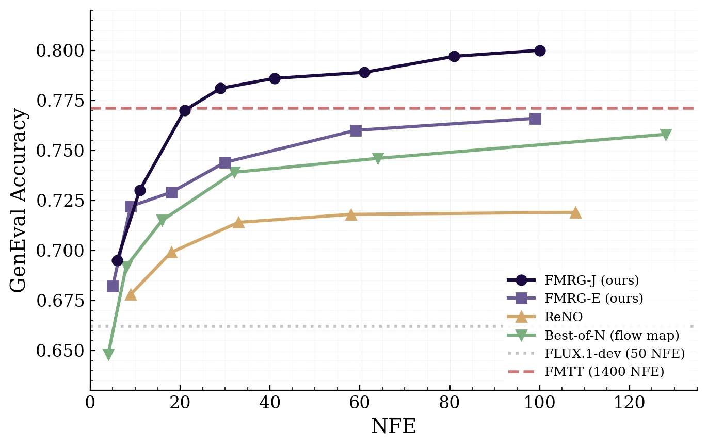
GenEval accuracy vs. NFEFMRG-J dominates the Pareto frontier across all NFE budgets — matching FMTT's quality (0.77) at NFE 20, a 70× reduction in compute.
Method
Overall↑
Single
Two
Count
Colors
Position
Color Attr.
NFE↓
FLUX
0.662
.991
.795
.697
.801
.212
.475
50
Flow Map
0.668
.975
.848
.637
.777
.210
.560
8
Flow Map + Best-of-N
0.758
1.00
.909
.838
.872
.260
.670
128
ReNO
0.716
1.00
.881
.769
.875
.172
.608
58
FMTT
0.771
.988
.929
.850
.862
.310
.690
1400
FMRG-E
0.766
1.00
.927
.828
.856
.297
.685
100
FMRG-J
0.770
.997
.922
.863
.854
.295
.690
20
FMRG-J
0.800
1.00
.947
.884
.902
.292
.772
100
GenEval accuracyOn a shared FLUX flow-map backbone, FMRG attains the best GenEval score overall (0.80) — and the best score at every fixed NFE budget.
1 / 5
BibTeX
@article{huang2026fmrg,
title={How to Guide Your Flow: Few-Step Alignment via Flow Map Reward Guidance},
author={Huang, Jerry Y. and Lin, Justin and Shah, Sheel and Nair, Kartik and Boffi, Nicholas M.},
journal={arXiv preprint},
year={2026}
}